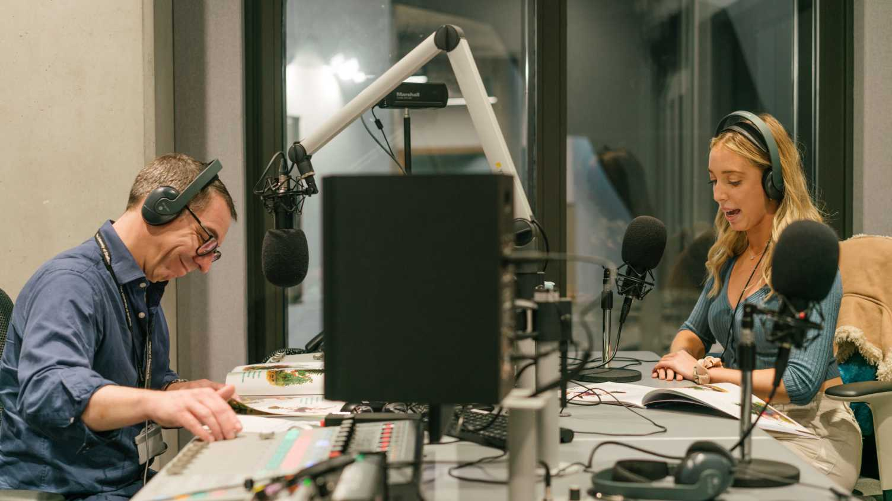
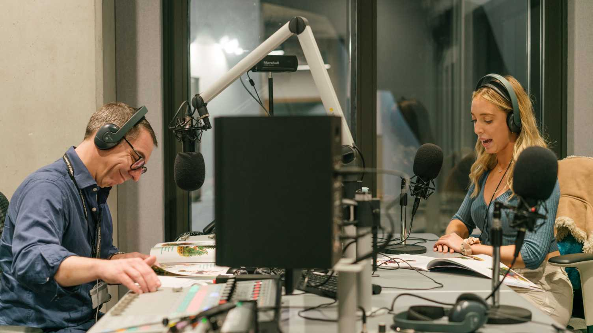

Overview

Our students go on to specialise in areas such as TV news, sports reporting, political journalism or even PR and communications.
Before you find your niche, you’ll learn and perfect the full range of skills you need as a contemporary media professional, including:
- knowing the difference between 'good' and 'bad' journalism;
- the ability to craft razor-sharp copy for a range of audiences;
- practising within the bounds of media law and ethics;
- and how to spot and tell great stories across all platforms, including print, television, radio, web and social media.
You’ll get the chance to make contacts and learn on the job. Our long-standing connections in the media industry open up a huge range of placement opportunities at media organisations like the BBC, Press Association, Bloomberg and the Guardian.
We also offer you the option to take a placement year to help gain vital experience and get ahead of the competition before graduation day.
As a hands-on department at a prestigious Russell Group university, we're uniquely placed to offer you the best of both worlds. You’ll be taught by award-winning editors and authors, active journalists and world-leaders in media and communication research.
If you're interested in understanding as well as doing journalism, this course delivers the perfect balance of practical know-how and theoretical knowledge on the history, theory and key debates of the industry.


As a hands-on department at a prestigious Russell Group university, we're uniquely placed to offer you the best of both worlds. You’ll be taught by award-winning editors and authors, active journalists and world-leaders in media and communication research.
If you're interested in understanding as well as doing journalism, this course delivers the perfect balance of practical know-how and theoretical knowledge on the history, theory and key debates of the industry.
Modules
As a hands-on department at a prestigious Russell Group university, we're uniquely placed to offer you the best of both worlds. You’ll be taught by award-winning editors and authors, active journalists and world-leaders in media and communication research.
First year
Your first year of study comprises a single, integrated core module.
This module develops news writing, news production and academic skills, combined with theoretical understanding of journalism in both a national and international context. It also provides an introduction to key future themes such as media law, ethics and analysing information. Students will learn how to write and structure news stories, develop interviewing skills, source and use quotes, and journalistic social media skills, amongst others. Themes include; journalism and politics; media freedom; journalism and society; audiences; technology and innovation in journalism; law and ethics; current debates in industry; and analysing news agendas.
120 credits
Second year
In your second year, you take three core modules: for your third core module, you have a choice between two modules. You will choose your fourth module from either those taught by the School of Journalism, Media and Communication or the Guided Module Choice options available from other departments.
You also have an option to take Languages For All modules.
You must pass the Media Law for Journalists module in order to continue to year 3.
Core modules
This module will give students a range of multi-platform production skills to showcase their journalism and to enable them to operate as critically thinking professionals. The module will gradually build up students' real world experience and will enable them to operate as self-motivated individuals as well as within a team. Students will work as Journalists in a variety of ways - ranging from the fast paced Newsday environment to the production of features, documentaries, projects and portfolios over a longer period of time. Students will learn to work as professionals while adhering to industry guidelines and making connections with academic theory.
60 credits
This module provides for those wishing to be journalists, or studying journalism, essential knowledge of media law applying in England and Wales, and of regulatory codes which UK journalists should comply with. This law includes that of defamation, privacy and contempt of court, and other law governing court reporting. The codes seek to uphold journalistic standards generally, including protection of people's privacy and of the identities of sources promised confidentiality. The module also demonstrates that UK journalists can assert `human rights' which in law and the codes uphold freedom of expression, including publication of material `in the public interest'.
20 credits
Optional modules A
You must choose your third core module from the the modules on this list.
This module introduces journalism students to the skills required to write news reports from Crown, magistrates' and coroners' courts cases. Student will visit these courts to makes notes on real cases for these reports. Feedback is given to each student on their draft and finalised reports, and on their notes. Their accuracy in note-taking and speed in writing such a news report is assessed in a formal examination in which they write up a news report of a hypothetical 'prosecution opening' of a trial.
20 credits
This module will provide students with knowledge and skills necessary to communicate messages through the media. Case studies and practical workshops will allow students to learn about the practice of media communication. They will learn how the media operates and how to communicate messages through interviews, press conferences, news releases and social media. Topics covered in the module will include the development of communication strategies, the understanding of news values and news cycles and strategies for successful and ethical communication.
20 credits
Optional modules B
You must choose one module from either this list OR the Guided Module Choice list below.
This module introduces journalism students to the skills required to write news reports from Crown, magistrates' and coroners' courts cases. Student will visit these courts to makes notes on real cases for these reports. Feedback is given to each student on their draft and finalised reports, and on their notes. Their accuracy in note-taking and speed in writing such a news report is assessed in a formal examination in which they write up a news report of a hypothetical 'prosecution opening' of a trial.
20 credits
This module will provide students with knowledge and skills necessary to communicate messages through the media. Case studies and practical workshops will allow students to learn about the practice of media communication. They will learn how the media operates and how to communicate messages through interviews, press conferences, news releases and social media. Topics covered in the module will include the development of communication strategies, the understanding of news values and news cycles and strategies for successful and ethical communication.
20 credits
This module will provide students with knowledge and skills necessary to communicate messages through the media. Case studies and practical workshops will allow students to learn about the practice of media communication. They will learn how the media operates and how to communicate messages through interviews, press conferences, news releases and social media. Topics covered in the module will include the development of communication strategies, the understanding of news values and news cycles and strategies for successful and ethical communication.
20 credits
This module will provide students with knowledge and skills necessary to communicate messages through the media. Case studies and practical workshops will allow students to learn about the practice of media communication. They will learn how the media operates and how to communicate messages through interviews, press conferences, news releases and social media. Topics covered in the module will include the development of communication strategies, the understanding of news values and news cycles and strategies for successful and ethical communication.
20 credits
This module will provide students with knowledge and skills necessary to communicate messages through the media. Case studies and practical workshops will allow students to learn about the practice of media communication. They will learn how the media operates and how to communicate messages through interviews, press conferences, news releases and social media. Topics covered in the module will include the development of communication strategies, the understanding of news values and news cycles and strategies for successful and ethical communication.
20 credits
Guided module choice
This module will provide students with knowledge and skills necessary to communicate messages through the media. Case studies and practical workshops will allow students to learn about the practice of media communication. They will learn how the media operates and how to communicate messages through interviews, press conferences, news releases and social media. Topics covered in the module will include the development of communication strategies, the understanding of news values and news cycles and strategies for successful and ethical communication.
20 credits
This module will provide students with knowledge and skills necessary to communicate messages through the media. Case studies and practical workshops will allow students to learn about the practice of media communication. They will learn how the media operates and how to communicate messages through interviews, press conferences, news releases and social media. Topics covered in the module will include the development of communication strategies, the understanding of news values and news cycles and strategies for successful and ethical communication.
20 credits
This module will provide students with knowledge and skills necessary to communicate messages through the media. Case studies and practical workshops will allow students to learn about the practice of media communication. They will learn how the media operates and how to communicate messages through interviews, press conferences, news releases and social media. Topics covered in the module will include the development of communication strategies, the understanding of news values and news cycles and strategies for successful and ethical communication.
20 credits
This module will provide students with knowledge and skills necessary to communicate messages through the media. Case studies and practical workshops will allow students to learn about the practice of media communication. They will learn how the media operates and how to communicate messages through interviews, press conferences, news releases and social media. Topics covered in the module will include the development of communication strategies, the understanding of news values and news cycles and strategies for successful and ethical communication.
20 credits
This module will provide students with knowledge and skills necessary to communicate messages through the media. Case studies and practical workshops will allow students to learn about the practice of media communication. They will learn how the media operates and how to communicate messages through interviews, press conferences, news releases and social media. Topics covered in the module will include the development of communication strategies, the understanding of news values and news cycles and strategies for successful and ethical communication.
20 credits
This module will provide students with knowledge and skills necessary to communicate messages through the media. Case studies and practical workshops will allow students to learn about the practice of media communication. They will learn how the media operates and how to communicate messages through interviews, press conferences, news releases and social media. Topics covered in the module will include the development of communication strategies, the understanding of news values and news cycles and strategies for successful and ethical communication.
20 credits
This module will provide students with knowledge and skills necessary to communicate messages through the media. Case studies and practical workshops will allow students to learn about the practice of media communication. They will learn how the media operates and how to communicate messages through interviews, press conferences, news releases and social media. Topics covered in the module will include the development of communication strategies, the understanding of news values and news cycles and strategies for successful and ethical communication.
20 credits
Third year
In your third year, you take two core modules, then choose from a range of others taught by the School of Journalism, Media and Communication and the Guided Module Choice options available from other departments.
You also have an option to take Languages For All modules.
Core modules
This module will provide students with knowledge and skills necessary to communicate messages through the media. Case studies and practical workshops will allow students to learn about the practice of media communication. They will learn how the media operates and how to communicate messages through interviews, press conferences, news releases and social media. Topics covered in the module will include the development of communication strategies, the understanding of news values and news cycles and strategies for successful and ethical communication.
20 credits
This module will provide students with knowledge and skills necessary to communicate messages through the media. Case studies and practical workshops will allow students to learn about the practice of media communication. They will learn how the media operates and how to communicate messages through interviews, press conferences, news releases and social media. Topics covered in the module will include the development of communication strategies, the understanding of news values and news cycles and strategies for successful and ethical communication.
20 credits
The content of our courses is reviewed annually to make sure it's up-to-date and relevant. Individual modules are occasionally updated or withdrawn. This is in response to discoveries through our world-leading research; funding changes; professional accreditation requirements; student or employer feedback; outcomes of reviews; and variations in staff or student numbers. In the event of any change we'll consult and inform students in good time and take reasonable steps to minimise disruption.
Entry requirements
With Access Sheffield, you could qualify for additional consideration or an alternative offer - find out if you're eligible.
The A Level entry requirements for this course are:
ABB
A Levels + a fourth Level 3 qualification: BBB + B in the EPQ
International Baccalaureate: 33
BTEC Extended Diploma: DDD in a relevant subject
BTEC Diploma: DD + B at A Level
Scottish Highers: AAABB
Welsh Baccalaureate + 2 A Levels: B + AB at A Level
Access to HE Diploma: Award of Access to HE Diploma in a relevant subject, with 45 credits at Level 3, including 30 at Distinction and 15 at Merit
The A Level entry requirements for this course are:
BBB
A Levels + a fourth Level 3 qualification: BBB + B in the EPQ
International Baccalaureate: 32
BTEC Extended Diploma: DDM in a relevant subject
BTEC Diploma: DD + B at A Level
Scottish Highers: AABBB
Welsh Baccalaureate + 2 A Levels: B + BB at A Level
Access to HE Diploma: Award of Access to HE Diploma in a relevant subject, with 45 credits at Level 3, including 24 at Distinction and 21 at Merit
English language requirements
You must demonstrate that your English is good enough for you to successfully complete your course. For this course, we require: GCSE English Language at grade 4/C; IELTS grade of 7.5 with a minimum of 7.0 in each component; or an alternative acceptable English language qualification
If you're an international student who does not meet the entry requirements for this course, you have the opportunity to apply for an International Foundation Year in Business, Social Sciences and Humanities at the University of Sheffield International College. This course is designed to develop your English language and academic skills. Upon successful completion, you can progress to degree level study at the University of Sheffield.
If you have any questions about entry requirements, please contact the school/department.
Fees and funding
Fees
Tuition fees for 2025 entry have not been confirmed. Please use 2024-25 information as a guide.
Additional costs
The annual fee for your course includes a number of items in addition to your tuition. If an item or activity is classed as a compulsory element for your course, it will normally be included in your tuition fee. There are also other costs which you may need to consider.
Examples of what’s included and excluded
As part of your degree you have the opportunity to take external exams administered by the National Council for the Training of Journalists (NCTJ). There is no additional charge for your first sitting of these exams this cost is covered by the School of Journalism, Media and Communication.
If you resit the exams, however, you will need to pay the fees. (We strongly encourage students to take the NCTJ exams, but they are not compulsory and you don't need to sit or pass them to complete your degree.) If you resit NCTJ exams, you will need to pay the resit fee.
Funding your study
Depending on your circumstances, you may qualify for a bursary, scholarship or loan to help fund your study and enhance your learning experience.
Use our Student Funding Calculator to work out what you’re eligible for.
Additional funding
Details of funding awards and what the fees cover can be found on the department site.
Fees and funding for the School of Journalism, Media and Communication.
Learning and assessment
Learning
- Practical journalism assignments and workshops: you'll gather video, audio, interviews and copy from around the city, preparing the content using our industry standard editing suites, newsrooms and broadcast studios. Regular workshops with our creative media team will also teach you how to best harness our facilities.
- Seminars and lectures: learn journalism ethics, law, history and critique through our lecture and seminar programmes.
- News days: all your skills will be put to the test on our news days, where you’ll play your part in a simulated newsroom environment to find, write, proof and publish real stories for our live news website.
We invest to create the right environment for you. That means outstanding facilities, study spaces and support, including 24/7 access to our online library service.
Study spaces and computers are available to offer you choice and flexibility for your study. Our five library sites give you access to over 1.3 million books and periodicals. You can access your library account and our rich digital collections from anywhere on or off campus. Other library services include study skills training to improve your grades, and tailored advice from experts in your subject.
Learning support facilities and library opening hours
Our staff include professional journalists with many years of experience in radio, TV, newspapers, magazines and digital media. They also include academic researchers with big reputations for their work on journalism safety, freedom of expression, media law and ethics, political communication, and much more.
Assessment
You'll be assessed in a number of ways, including both exams and coursework you produce in response to theory based modules, and through the news stories and broadcasts you create as part of the practical elements of the degree.
The NCTJ diploma qualification will also include exams, which will run concurrently with the modules you study throughout the course.
Programme specification
This tells you the aims and learning outcomes of this course and how these will be achieved and assessed.
Find programme specification for this courseFacilities
Brand new Faculty of Social Sciences building The Wave co-locates many of our departments to promote interdisciplinary excellence in research, learning and teaching and help us to lead the way in addressing important societal challenges.
Our facilities in The Wave include state-of-the-art lecture theatres, broadcast facilities and editing suites.

 



Image Title
Image Description
School of Journalism, Media and Communication
Here at the School of Journalism, Media and Communication, we’ve been training extraordinary journalists and conducting pioneering research since 1994, when our department was launched by Observer Editor Donald Trelford at our first home in Minalloy House.
After 30 years in the industry, we’ve learnt a thing or two about networking. Study with us, and you'll have exclusive access to our unrivalled contacts and alumni network, situated in newsrooms across the world. We’ll also provide you with award-winning employability support in the form of one-to-one support sessions, weekly masterclasses and an array of placement opportunities to help you get your foot in the door.
You’ll learn to ace the basics on our practical courses, including how to spot big stories and make them shine; edit engaging audio, video and podcasts in our state-of-the-art facilities; become an expert in social media; and even ace those shorthand exams.
We’re the only Russell Group University to be accredited by the NCTJ, BJTC and PPA, so you know you’re learning from the best of the best.
For those with an eye for journalism’s bigger picture, our research-led programmes will help you piece together the epic social narratives of global journalism, mass media and political communication. You’ll be rubbing shoulders with experts in media law, mis/disinformation, propaganda and freedom of the media - taking full advantage of the research excellence we have to offer as a Russell Group institution.
Support and wellbeing
We also have a dedicated student support staff and a personal tutor system in place within the department to help you deal with any issues. If you need support regarding your workload, fees and finance, disability services or your mental health and wellbeing, there is always someone on hand to help.
How we support youGraduate careers
Our graduates go on to achieve great things and remain part of our legacy forever. They change the world through the power of storytelling - be they journalists, documentarians, PR experts, novelists, or teachers.
Employers have previously included include Reach, the Financial Times, LADbible, National World PLC and Hearst Magazines (publishers of Esquire, Prima, Good Housekeeping and Men’s Health).